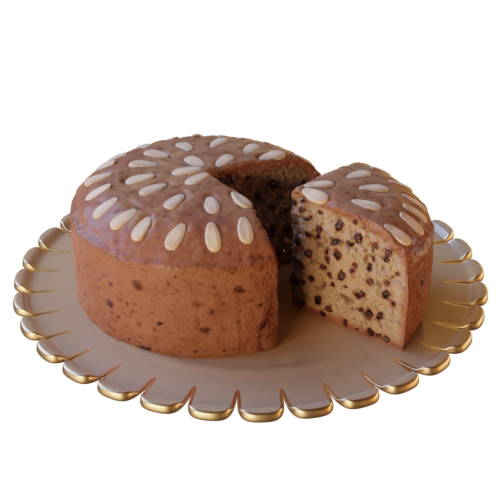

Dundee Cake

6 ozs. Butter.
5 ozs. Sugar.
8 ozs. Flour.
1 + 1/2 ozs. Peel.
1/2 teaspoonful Baking Powder.
1 oz. Almonds.
4 Eggs.
3 ozs. Currants.
3 ozs. Raisins.
3 ozs. Sultanas.
Beat butter and sugar to a cream.
Add eggs and flour altenatively, then fruit and baking powder.
Place in a prepared cake tin.
Bake in a hot oven for 10 minutes, then sprinkle blanched almonds on top and cook more slowly about 1 + 1/2 hours.
From The Glasgow cookery book, publication date 1900
by Glasgow and West of Scotland College of Domestic Science
Contributor Cornell University Library
https://archive.org/embed/cu31924000657647